Illustration
- Trace the photography. (I just attached a tracing paper on my computer screen. Tracing is a great way to achieve accurate composition in a shorter amount of time.)
- Use a light tablet or bright window to trace the lines onto watercolor paper. -Add lost detail with a pencil. 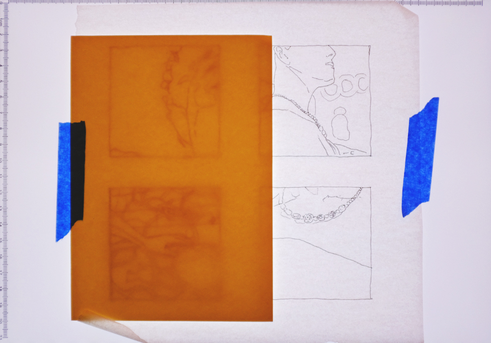
- Choose one color and paint the thumbnails. (the color can be later changed using photoshop.)
- Photograph the painting with a good digital camera. 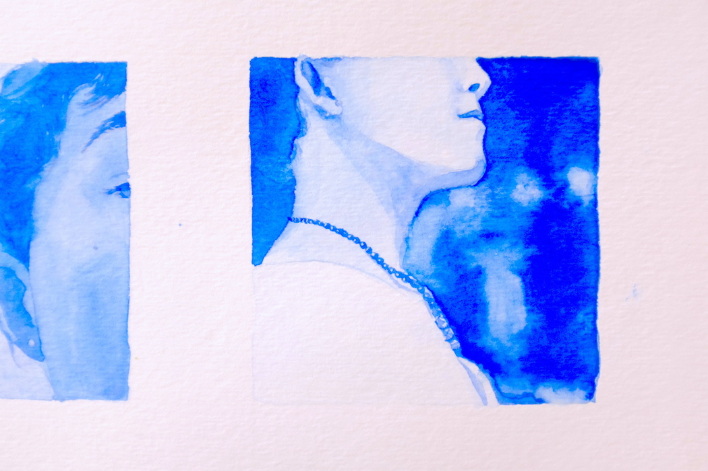
- Use photoshop to adjust brightness and contrast.
- Use the quick mask tool to get a negative and positive selection of the image.
- Attach the selection to a solid color layer to have flexibility with color choice. 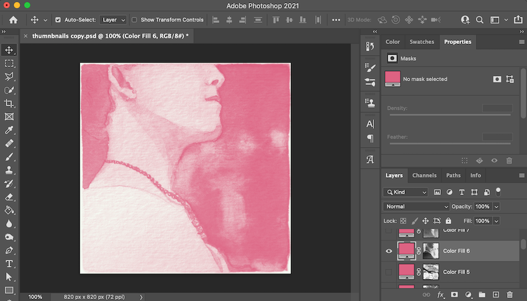
- Exported as a png with a transparent background.
Coding
The coding portion of the visual narrative website included using the p5.js editor and later moving them to a local development environment where I integrated the p5.js sketches onto a local website. The p5.js editor was used to create an audio visualizer, timed subtitles, and interactive images. I used GitHub to document changes and host the website. EventListener and namespacing were used to refine further interactions between the JavaScript files and HTML files.
p5.js Editor
- See examples of p5 sketches with audio visualizations.
- Experiment and develop the code for the audio visualizers in the p5 editor.
- Study FFT analysis to convert audio into data points. (I watched this class by Danne Woo to get the basic code and example for FFT analysis.) 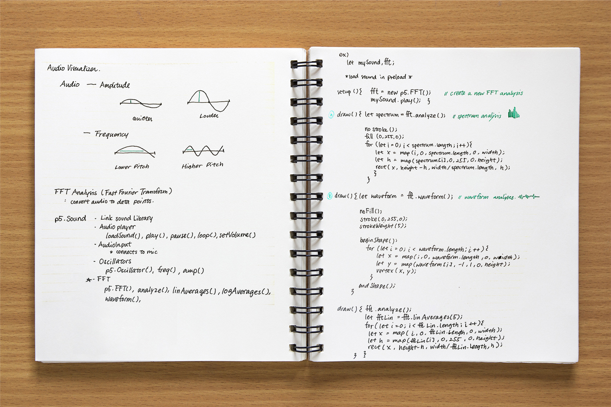
- Experiment with the FFT waveform and spectrum analysis.
- Develop the code for the finalized audio visualizer. (I unified the height of the spectrum to create a simple gradient effect)

let myAudio, fft, img; function preload() { myAudio = loadSound("smells.mp3"); img = loadImage("hatsue-10.jpg"); } function setup() { createCanvas(400, 400); fft = new p5.FFT(0.9, 64); //Create a new FFT analysis myAudio.play(); } function draw() { background(255); image(img, 0, 0); let spectrum = fft.analyze(); //spectrum analysis noStroke(); for (let i = 0; i < spectrum.length; i++) { let x = map(i, 0, spectrum.length, 0, width); fill(spectrum[i] * 1.5 + 50, 173, 159, 80); rect(x, 0, width / spectrum.length, height); } } - Plan and develop the code to time the subtitles with the audio in the p5 editor.
- Take the transcribed text and use an array to store each chunk of text. Show the
text using a variable
index. - Use
currentTime()mouselicked()andconsole.log()to document the timing of the subtitles while playing the audio. Use the variableindexto view and switch the text. - Store the documented time from the concole in an array.
- Create a function that adds 1 to the
indexeach time the audio'scurrentTime()exceeds the corresponding documented time. - See final p5.js subtitle function here.
- Plan and develop the code to interactively show groups of photos in the p5 editor.
- Use
tint()map()andmouseX, mouseYto change the opacity of the image based on the cursor position. - The calculation for mapping
mouseX, mouseYto a tint value between 0 and 255 was a bit tricky for me to understand. I ended up just guessing and seeing what works.

tint2 = map((mouseX)*-1+mouseY, width-100, 0, 255, 0); tint1 = map(mouseX+mouseY, 100, width, 255, 0); tint3 = map(mouseX+(mouseY)*-1, width-100, 0, 255, 0); tint4 = map(mouseY-(mouseX)*-1, width-100, 0, 255, 0); tint(255,tint4); image(img4, 0, 0, width, height); tint(255, tint1); image(img1, 0, 0, width, height); tint(255, tint2); image(img2, 0, 0, width, height); tint(255,tint3); image(img3, 0, 0, width, height); - Use
let subtitleArray = [];
let index = 0;
function showText() {
subtitle.html(subtitleArray[index]);
}
function incertText() {
subtitleArray.push("So I’m very attached to smells", "and so there’s a lot
of specific smells", "that I associate with many different things.",
"Like the bathroom in the beginning",
"it kind of smelled like my grandma’s bathroom"...);
}

function mouseClicked() {
index = index + 1
console.log(myAudio.currentTime());
}
let subtitleCueArray = [];
function incertCue() {
subtitleCueArray.push(
0,
2.3684126984126985,
4.969047619047619,
7.865736961451248,
10.419931972789115,
12.718707482993198, ...)
}
function timeSubtitles() {
for (let i = 0; i < subtitleCueArray.length; i ++){
if (myAudio.currentTime()>=subtitleCueArray[i]){
index = i;
}
}
}
Website
- Set up a local development environment for the project.
- Use Visual Studio Code to organiza the development environment. (Creating p5.js sketches on a local environment instead of the p5.js editor allows larger files sizes and better organizations for bigger projects.) 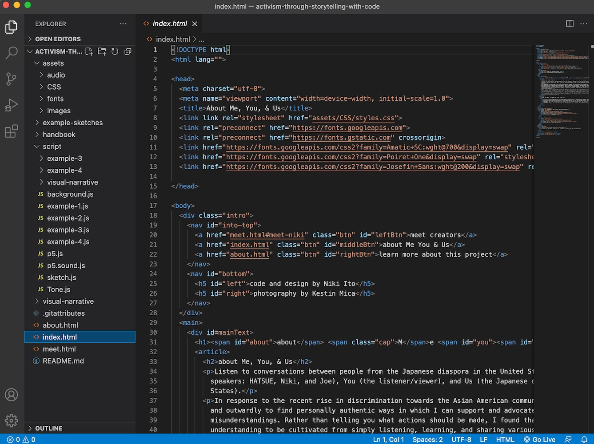
- Create an account and a project repository on GitHub.
- Use GitHub Pages to host the website. (this is a great way to host a website for free and contribute to open-source processing.) 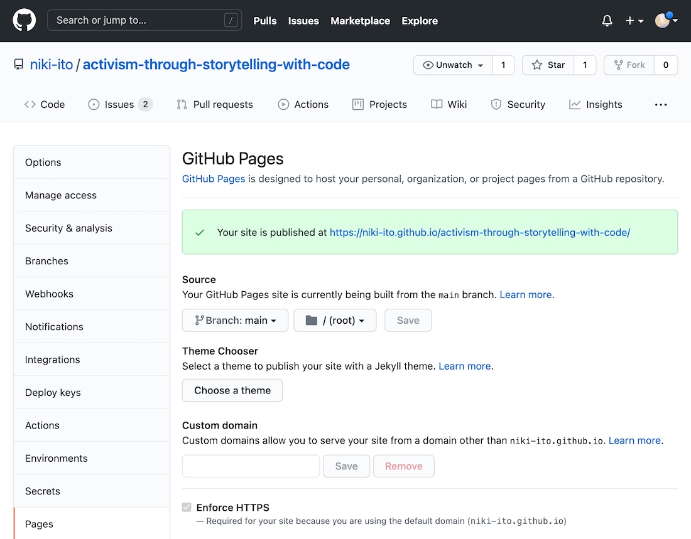
- Add a README.md to explain and organize the repository for viewers.
- Use GitHub Desktop to interact with GitHub from your local development environment. (you can see the changes you've made and push the commits to update the website on GitHub.) 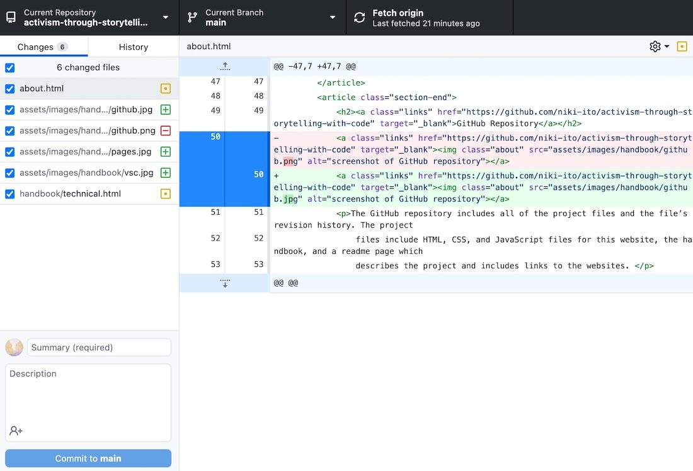
- Create the basic structure of the website. (I created a main index.html, a script folder for JavaScripts files, and an assets folder for audio, images, fonts, and CSS files.)
- Move the finalized p5 sketches onto the personal development environment. (before moving the large finalized visual narrative p5.js sketch, I moved smaller p5.js sketches to get used to the process.)
- Create wireframes for the website. 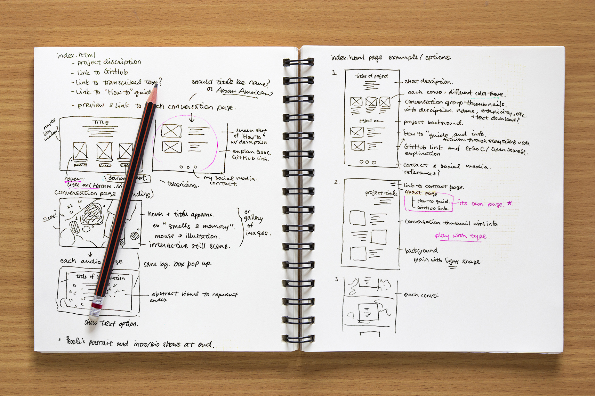
- Create mockups for the design of the website. 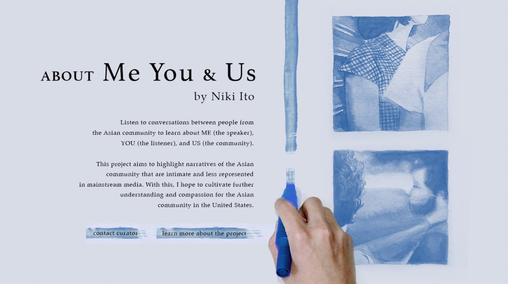 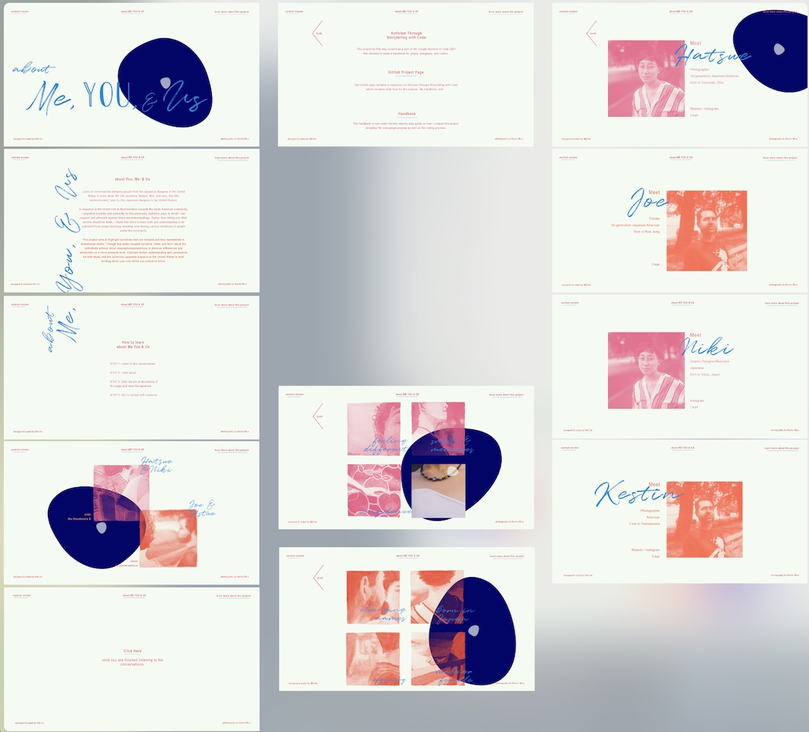
- Create Google Docs for the text draft of the website. (using Google Docs allowed collaborative editing.)
- Code the website.
- Use EventListener to have the p5.js canvas show when a thumbnail is clicked.
- Add an id
clickable-1to the html thumbnail element. - Use
.getElementByIdto select the id from the html document. - Use
.addEventListenerto listen for when the id is clicked. - Call the function
showCanvas()to make the p5.js canvas visible when the canvas id is clicked. To do so, select the default canvas id namedefaultCanvas0and style the CSS to bevisibility: visible; - Use instance mode aka namespacing to allow two p5.js canvases on
one html page.
(on the audio visualization page hatsue&niki.html, there is a p5.js canvas that
appears in the foregorund but I wanted to add a p5.js canvas in the background as
well.)
- Here is a tutorial by The Coding Train that I referenced.
- Here are the files before namespacing. Below is a snippet of the code.
function draw() { background(255); displayImgTimerSubtitle(); //audio visualizer let spectrum = fft.analyze(); noStroke(); for (let i = 0; i < spectrum.length; i++) { let x = map(i, 0, spectrum.length, 0, width); let h = map(spectrum[i], 0, 255, 0, height); fill(spectrum[i] * 1.5 + 50, 173, 159, 80); rect(x, 0, width / spectrum.length, height); } } - Here is the file after namespacing. Below is a snippet of the code. (I had to combine the separated script files in order to use namespacing.)
- Post an Issue to document coding issues and contribute to open-source processing. 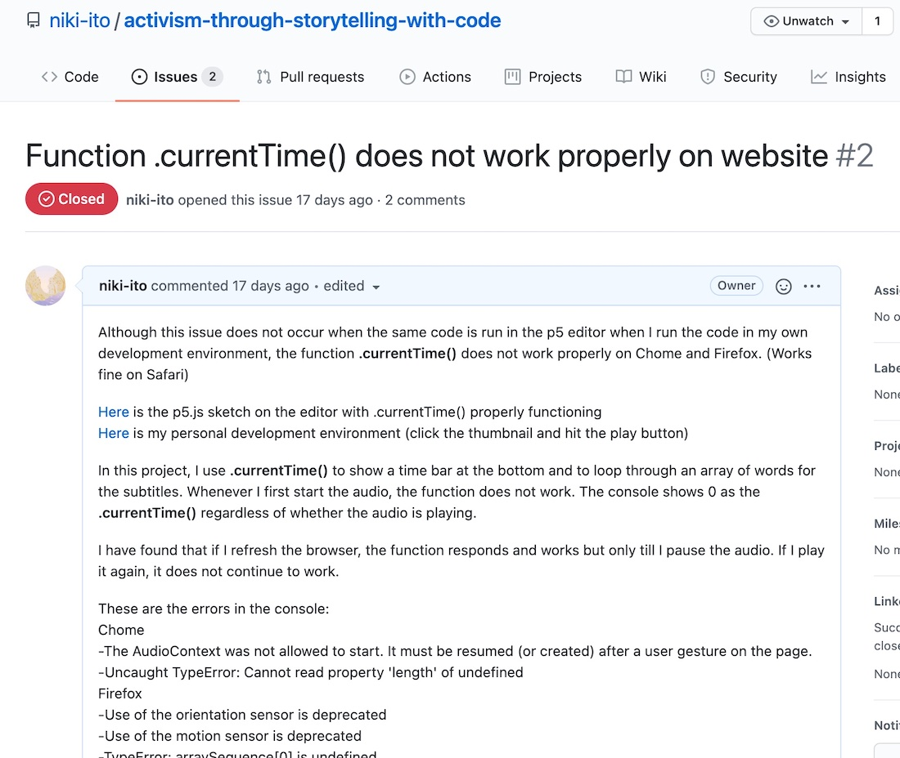

function setup() {
...
document.getElementById("clickable-1")
.addEventListener("click", showAndSwitchElementsForSketch1);
document.getElementById("button-exit")
.addEventListener("click",hideCanvas);
}
function showCanvas(){
document.getElementById("defaultCanvas0").style.visibility="visible";
document.getElementById("container").style.visibility="visible";
}
function hideCanvas() {
pauseAnyAudio();
document.getElementById("defaultCanvas0").style.visibility="hidden";
document.getElementById("container").style.visibility="hidden";
}
function showAndSwitchElementsForSketch1() {
showCanvas();
display = 1;
elementsForSketchArray[0].controlButton1();
}
...
p.draw = () => {
p.background(255);
p.displayImgTimerSubtitle();
//audio visualizer
p.spectrum = p.fft.analyze();
p.noStroke();
for (let i = 0; i < p.spectrum.length; i++) {
p.x = p.map(i, 0, p.spectrum.length, 0, p.width);
p.fill(p.spectrum[i] * 1.5 + 50, 173, 159, 80);
p.rect(p.x, 0, p.width / p.spectrum.length, p.height);
}
}
Resources
- p5.js website. (p5.js libraries, references, examples, and tutorials)
- The Coding Train by Daniel Shiffman. (YouTube tutorials)
- OpenProcessing. (example p5.js sketches)
- p5.js coding videos by Xin Xin. (YouTube tutorials)
Conclusion & Next Steps
As a beginner coder, this was an amazing opportunity to continue learning and advancing in creative coding. I always find it incredibly helpful to have mentors and teachers who can guide you through having a better understanding of the processing environment. It was also a great experience to contribute to open-source processing and be a part of public discourse to solve issues and help the processing community.
This project has allowed me to have a better idea of what I could do with creative coding. Now I feel that another career path besides Graphic Design has opened up to me. I hope to continue creating collaborative projects with programming and further contribute to the open-source creative coding community.